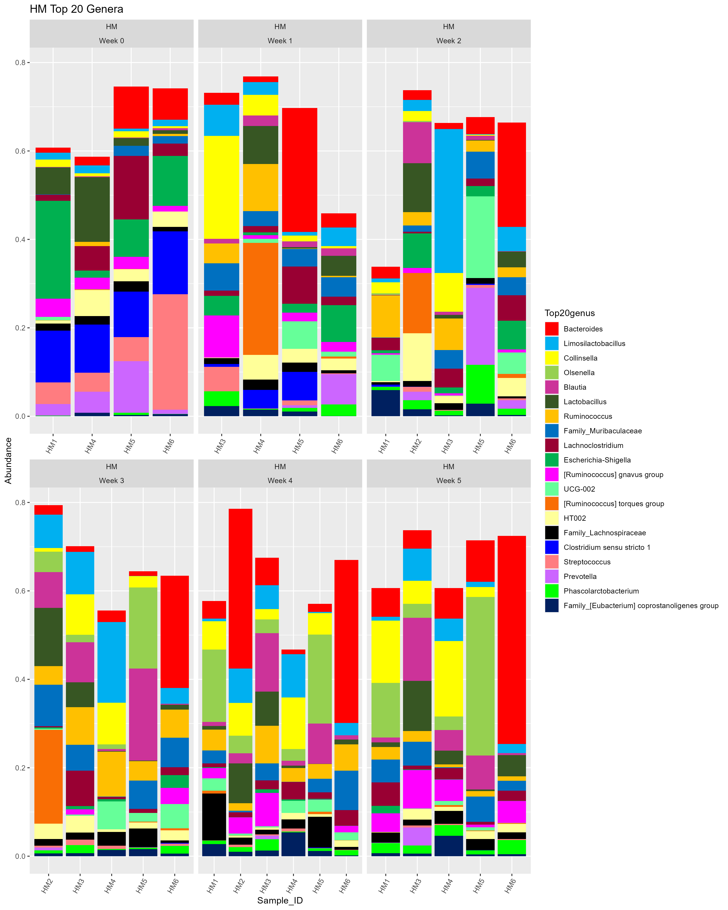
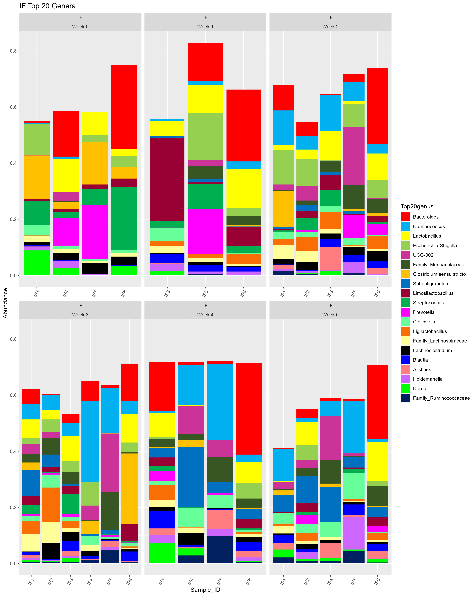
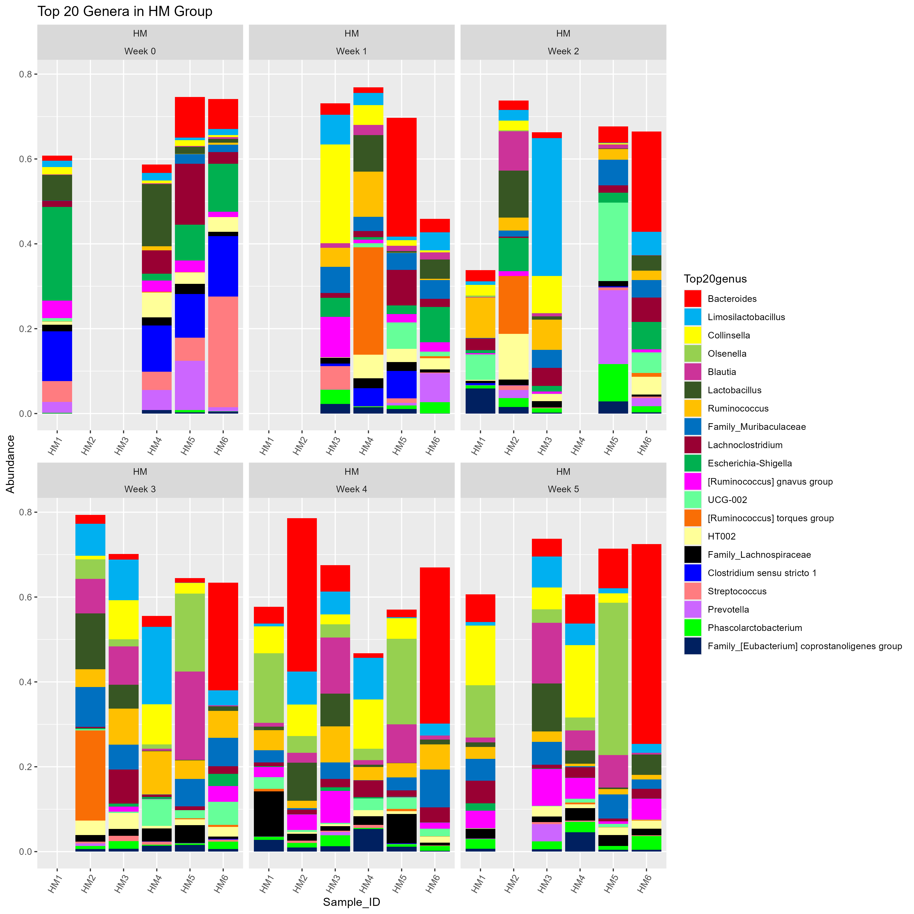
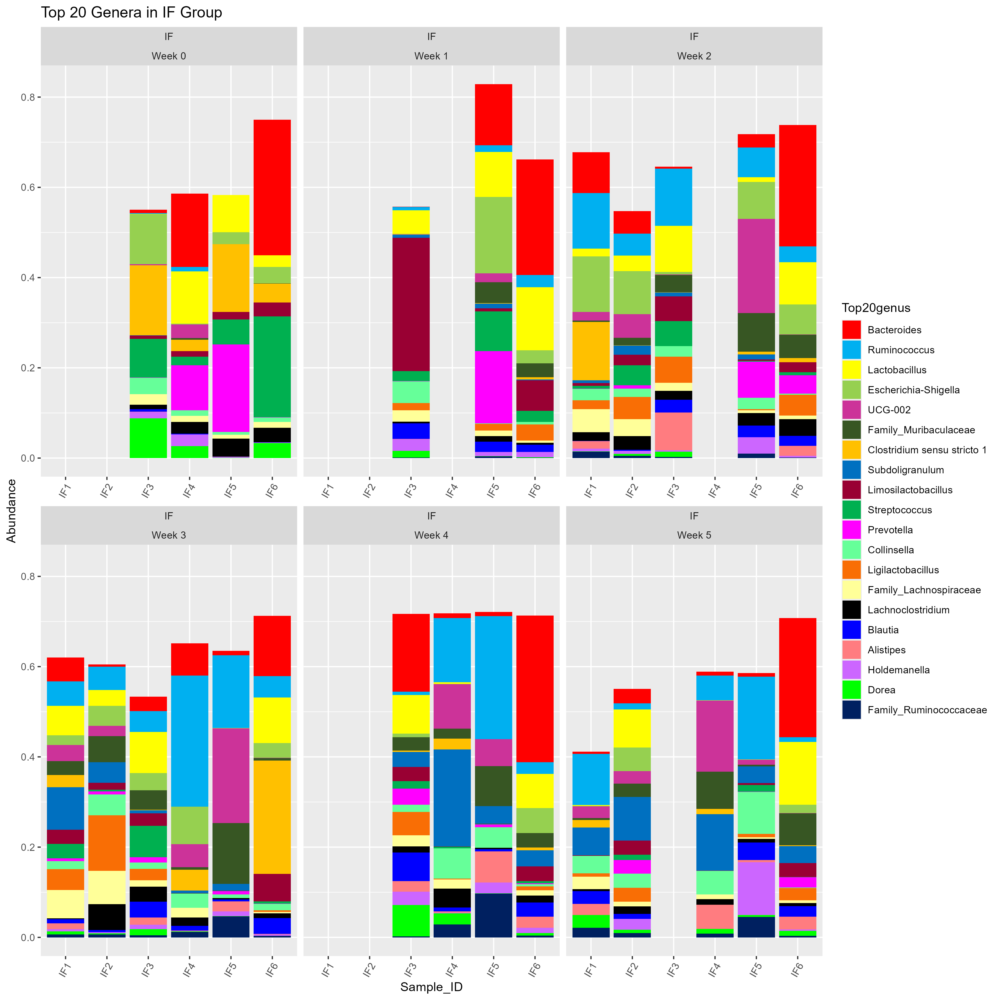
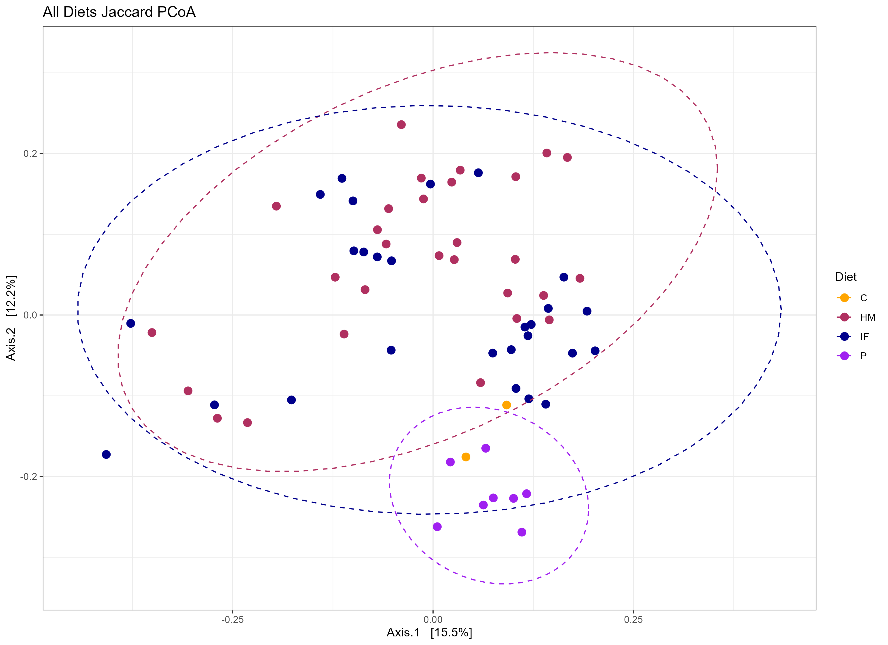
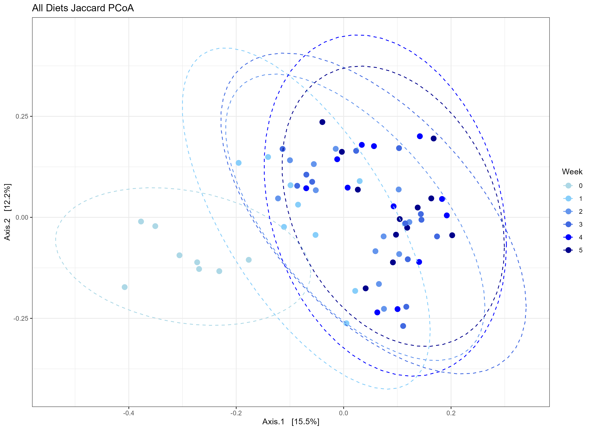
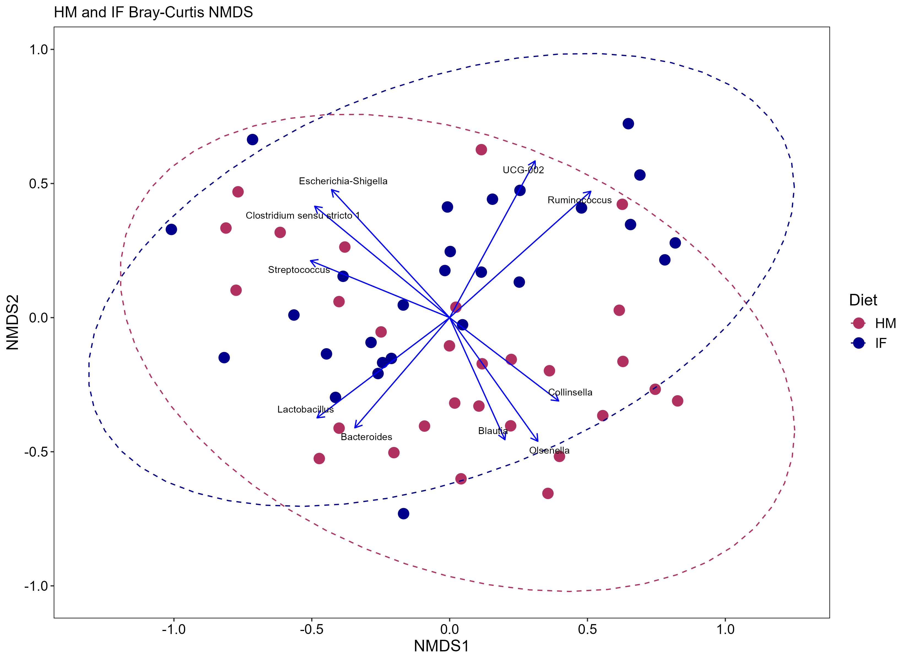
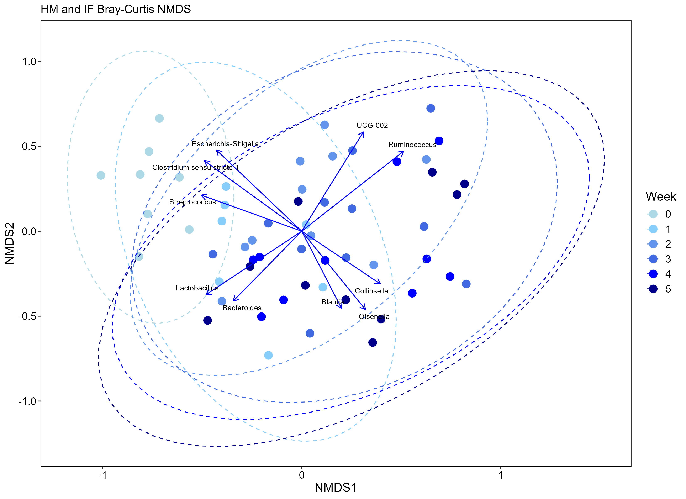

Code
knitr::opts_chunk$set(echo=FALSE, warning=FALSE, error=FALSE, message=FALSE)Stacked bar chart fun
Heidi Sellmann
April 27, 2024
knitr::opts_chunk$set(echo=FALSE, warning=FALSE, error=FALSE, message=FALSE)In this final assignment - the grand finale for BCB 520 - I am polishing up one of the figures in my thesis/manuscript… stacked bar charts!

Barrie pointed out that it would be helpful to display the random missing samples from my dataset. So, I added in the missing samples (originally not there) and went through the process again.

Barrie was right! This is easier to follow. And shocker, my advisor likes it much better too.
Sometimes what seems “unimportant” actually is important. Grateful for this class and all it continues to teach me, data-viz-wise and otherwise.
Just for fun! Here’s a few examples for how I simplified the data.



---
title: "Final Assignment - Polishing Up My Figures"
subtitle: "Stacked bar chart fun"
format:
html:
toc: false
echo: true
author: "Heidi Sellmann"
date: "2024-04-27"
categories: [Portfolio, DataViz, Microbiome, Bar charts, Assignment]
image: "grandFinale.jpg"
description: "Missing data is not meaningless!"
code-fold: true
code-tools: true
code-link: true
editor:
markdown:
wrap: 72
---
```{r}
knitr::opts_chunk$set(echo=FALSE, warning=FALSE, error=FALSE, message=FALSE)
```
# OVERVIEW
In this final assignment - the grand finale for BCB 520 - I am polishing up one of the figures in my thesis/manuscript... stacked bar charts!
```{r Load libraries, warning = FALSE, message=FALSE, output = FALSE}
library(phyloseq);packageVersion("phyloseq")
library(tidyverse);packageVersion("tidyverse")
library(vegan);packageVersion("vegan")
library(reshape2);packageVersion("reshape2")
library(magrittr);packageVersion("magrittr")
library(microbiome);packageVersion("microbiome")
```
```{r Load data orig}
genus_glom_rel_HM_data_clean_wide_ordered_Top20_LONG <- readRDS("genus_glom_rel_HM_data_clean_wide_ordered_Top20_LONG.rds")
genus_glom_rel_IF_data_clean_wide_ordered_Top20_LONG <- readRDS("genus_glom_rel_IF_data_clean_wide_ordered_Top20_LONG.rds")
```
# THE ORIGINAL VERSION
```{r Create color palette HM and IF}
#First create an initial 30 color palette to do the initial plots
library(RColorBrewer)
custom_col30_C <- c(
"#FF0000", "#00B0F0", "#FFFF00", "#96D050", "#CC3399",
"#375623", "#FFC000", "#0070C0", "#990033","#00B050",
"#FF00FF", "#66FF99", "#F96E05", "#FFFF99", "#000000",
"#0000FF", "#FF7C80", "#CC66FF", "#00FF00", "#002060",
"#5F5F5F", "#FF0066", "#666633", "#FF99FF", "#CCCC00",
"#66FFFF", "#660033", "#D9D9D9", "#666699", "#660066")
```
```{r Create top 20 genera plot HM and IF, echo=FALSE, output = FALSE}
#HM
top20generaPlotHM <- ggplot(genus_glom_rel_HM_data_clean_wide_ordered_Top20_LONG, aes(x = Sample_ID, y = Abundance, fill=Top20genus)) +
facet_wrap(Diet~Week, scales = "free_x") +
# facet_grid(TRMT~.) +
geom_bar(stat = "identity") +
scale_fill_manual(values=custom_col30_C) +
theme(axis.text.x = element_text(angle = 60, hjust = 1)) +
ggtitle("HM Top 20 Genera")
top20generaPlotHM
#IF
top20generaPlotIF <- ggplot(genus_glom_rel_IF_data_clean_wide_ordered_Top20_LONG, aes(x = Sample_ID, y = Abundance, fill=Top20genus)) +
facet_wrap(Diet~Week, scales = "free_x") +
# facet_grid(TRMT~.) +
geom_bar(stat = "identity") +
scale_fill_manual(values=custom_col30_C) +
theme(axis.text.x = element_text(angle = 60, hjust = 1)) +
ggtitle("IF Top 20 Genera")
top20generaPlotIF
#HM
# Extract the digits after the underscore in Sample_ID
genus_glom_rel_HM_data_clean_wide_ordered_Top20_LONG <- genus_glom_rel_HM_data_clean_wide_ordered_Top20_LONG %>%
mutate(Sample_ID = sub("^\\d+_([A-Za-z]+\\d+)$", "\\1", Sample_ID)) %>%
mutate(Sample_ID = factor(Sample_ID, levels = unique(Sample_ID[order(as.numeric(sub("^\\D*(\\d+).*", "\\1", Sample_ID)))])))
# this is the same from above!
# Create the plot with the ordered x-axis
top20generaPlotHM <- ggplot(genus_glom_rel_HM_data_clean_wide_ordered_Top20_LONG, aes(x = Sample_ID, y = Abundance, fill=Top20genus)) +
facet_wrap(Diet~Week, scales = "free_x", labeller = labeller(Week = function(x) paste("Week", x))) +
geom_bar(stat = "identity") +
scale_fill_manual(values=custom_col30_C) +
theme(axis.text.x = element_text(angle = 60, hjust = 1)) +
ggtitle("HM Top 20 Genera")
top20generaPlotHM
# using lebeller above to add Week label!
#IF
# Extract the digits after the underscore in Sample_ID
genus_glom_rel_IF_data_clean_wide_ordered_Top20_LONG <- genus_glom_rel_IF_data_clean_wide_ordered_Top20_LONG %>%
mutate(Sample_ID = sub("^\\d+_([A-Za-z]+\\d+)$", "\\1", Sample_ID)) %>%
mutate(Sample_ID = factor(Sample_ID, levels = unique(Sample_ID[order(as.numeric(sub("^\\D*(\\d+).*", "\\1", Sample_ID)))])))
# this is the same from above!
# Create the plot with the ordered x-axis
top20generaPlotIF <- ggplot(genus_glom_rel_IF_data_clean_wide_ordered_Top20_LONG, aes(x = Sample_ID, y = Abundance, fill=Top20genus)) +
facet_wrap(Diet~Week, scales = "free_x", labeller = labeller(Week = function(x) paste("Week", x))) +
geom_bar(stat = "identity") +
scale_fill_manual(values=custom_col30_C) +
theme(axis.text.x = element_text(angle = 60, hjust = 1)) +
ggtitle("IF Top 20 Genera")
top20generaPlotIF
# using lebeller above to add Week label!
```


## What do you think?
Barrie pointed out that it would be helpful to display the random missing samples from my dataset. So, I added in the missing samples (originally not there) and went through the process again.
# THE POLISHED VERSION
```{r Load data polished}
genus_glom_rel_HM_data_clean_wide_ordered_Top20_LONG_0s <- readRDS("genus_glom_rel_HM_data_clean_wide_ordered_Top20_LONG_0s.rds")
genus_glom_rel_IF_data_clean_wide_ordered_Top20_LONG_0s <- readRDS("genus_glom_rel_IF_data_clean_wide_ordered_Top20_LONG_0s.rds")
```
```{r HM 0s plot, warning=FALSE, echo=FALSE, output = FALSE}
#HM
top20generaPlotHM0s <- ggplot(genus_glom_rel_HM_data_clean_wide_ordered_Top20_LONG_0s, aes(x = Sample_ID, y = Abundance, fill=Top20genus)) +
facet_wrap(Diet~Week, scales = "free_x") +
# facet_grid(TRMT~.) +
geom_bar(stat = "identity") +
scale_fill_manual(values=custom_col30_C) +
theme(axis.text.x = element_text(angle = 60, hjust = 1)) +
ggtitle("HM Top 20 Genera")
top20generaPlotHM0s
#HM
# Extract the digits after the underscore in Sample_ID
genus_glom_rel_HM_data_clean_wide_ordered_Top20_LONG_0s <- genus_glom_rel_HM_data_clean_wide_ordered_Top20_LONG_0s %>%
mutate(Sample_ID = sub("^\\d+_([A-Za-z]+\\d+)$", "\\1", Sample_ID)) %>%
mutate(Sample_ID = factor(Sample_ID, levels = unique(Sample_ID[order(as.numeric(sub("^\\D*(\\d+).*", "\\1", Sample_ID)))])))
# this is the same from above!
# Create the plot with the ordered x-axis
top20generaPlotHM0s <- ggplot(genus_glom_rel_HM_data_clean_wide_ordered_Top20_LONG_0s, aes(x = Sample_ID, y = Abundance, fill=Top20genus)) +
facet_wrap(Diet~Week, scales = "free_x", labeller = labeller(Week = function(x) paste("Week", x))) +
geom_bar(stat = "identity") +
scale_fill_manual(values=custom_col30_C) +
theme(axis.text.x = element_text(angle = 60, hjust = 1)) +
ggtitle("Top 20 Genera in HM Group")
top20generaPlotHM0s
# using lebeller above to add Week label!
```
```{r IF 0s plot, warning=FALSE, echo=FALSE, output = FALSE}
#IF
top20generaPlotIF0s <- ggplot(genus_glom_rel_IF_data_clean_wide_ordered_Top20_LONG_0s, aes(x = Sample_ID, y = Abundance, fill=Top20genus)) +
facet_wrap(Diet~Week, scales = "free_x") +
# facet_grid(TRMT~.) +
geom_bar(stat = "identity") +
scale_fill_manual(values=custom_col30_C) +
theme(axis.text.x = element_text(angle = 60, hjust = 1)) +
ggtitle("IF Top 20 Genera")
top20generaPlotIF0s
#IF
# Extract the digits after the underscore in Sample_ID
genus_glom_rel_IF_data_clean_wide_ordered_Top20_LONG_0s <- genus_glom_rel_IF_data_clean_wide_ordered_Top20_LONG_0s %>%
mutate(Sample_ID = sub("^\\d+_([A-Za-z]+\\d+)$", "\\1", Sample_ID)) %>%
mutate(Sample_ID = factor(Sample_ID, levels = unique(Sample_ID[order(as.numeric(sub("^\\D*(\\d+).*", "\\1", Sample_ID)))])))
# this is the same from above!
# Create the plot with the ordered x-axis
top20generaPlotIF0s <- ggplot(genus_glom_rel_IF_data_clean_wide_ordered_Top20_LONG_0s, aes(x = Sample_ID, y = Abundance, fill=Top20genus)) +
facet_wrap(Diet~Week, scales = "free_x", labeller = labeller(Week = function(x) paste("Week", x))) +
geom_bar(stat = "identity") +
scale_fill_manual(values=custom_col30_C) +
theme(axis.text.x = element_text(angle = 60, hjust = 1)) +
ggtitle("Top 20 Genera in IF Group")
top20generaPlotIF0s
# using lebeller above to add Week label!
```


## Do you see the difference?
Barrie was right! This is easier to follow. And shocker, my advisor likes it much better too.
# IN CONCLUSION
Sometimes what seems "unimportant" actually is important. Grateful for this class and all it continues to teach me, data-viz-wise and otherwise.
# MORE FIGURUES
Just for fun! Here's a few examples for how I simplified the data.